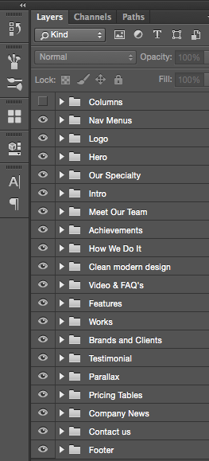

Thank you for downloading my psd file. Grab a copy of this design as a fully working Wordpress theme.
Enjoy!This design was prepared using Adobe Photoshop CC. Therefore, it is expected that some layer styles and shapes may not be compatible with previous Photoshop versions.
Your download includes the following file structure
Salem PSD
Blog - includes blog related files
Blog.psd
Single-Post.psd
Home - includes light and dark version of the home page
Home-Dark.psd
Home-Light.psd
Portfolio - includes 1 example of a single portolio layout
Portfolio-Single-Page.psd
Services - includes 6 individual service pages
Development.psd
Photography.psd
Social Marketing.psd
System Architecture.psd
UI/UX.psd
Copyright.psd
Documentation
assets
favicon.ico
index.html (click this to view the documentation)
Layers are organized from top to bottom as they appear on the design.

Open Sans
Raleway
Merriweather
Lato
Fontello (Entypo set)
Images in preview were obtained from